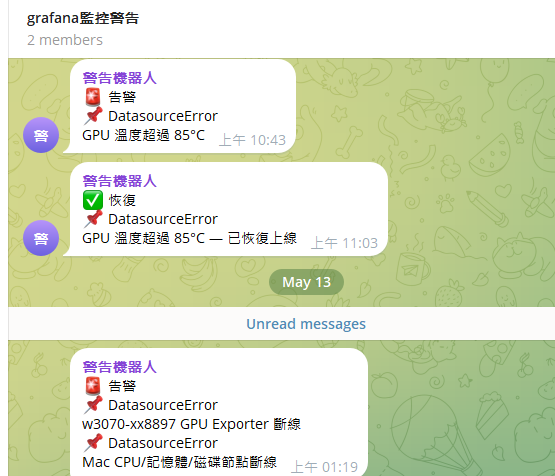
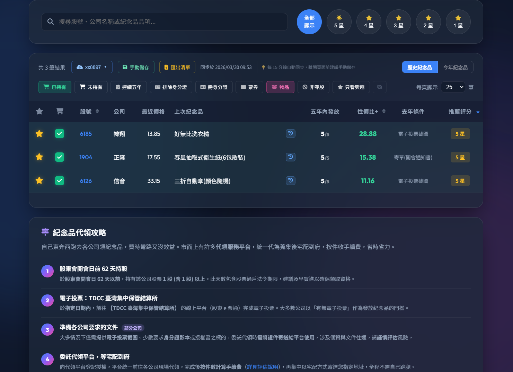
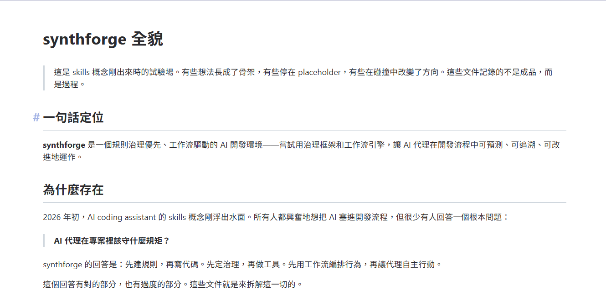
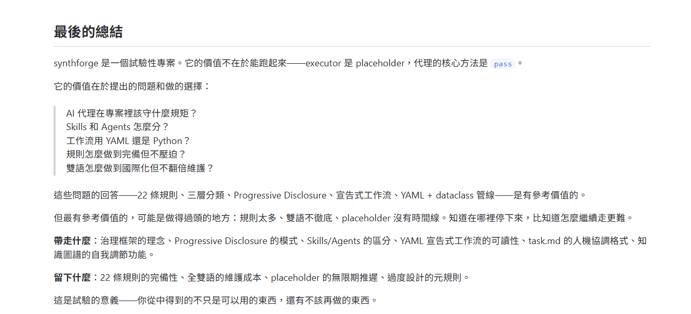

HOMELAB AI STACK — MLOPS
全棧 MLOps 監控：Grafana Dashboard
Prometheus + Grafana 監控 —— 5 個自訂 Dashboard，讓 AI 叢集的每個脈搏都清晰可見

Mac M4 系統資源監控 — CPU / 記憶體 / GPU 使用率

RTX 3070 GPU 監控 — 溫度 / VRAM / 推理佇列

Docker 容器監控 — 7 容器統一管理與健康狀態

LiteLLM Proxy 監控 — API 路由與負載均衡
HOMELAB AI STACK — MLOPS
網路監控 & 即時告警
Tailscale Mesh VPN 網路拓撲監控 + Telegram Bot 即時告警 —— 任何節點異常立即推播

Tailscale Mesh VPN — 三機互聯與網路拓撲

Telegram Bot 告警 — 節點離線、GPU 高溫即時推播
5
Grafana Dashboard
6
Alert Rules
23
ADR 架構決策紀錄
7
Docker 容器統一管理
100%
Worker 互備率
HOMELAB AI STACK — LITELLM
LiteLLM Proxy：多模型負載均衡
統一 API 介面，管理多個本地與雲端模型的負載均衡、容錯路由與 API Key 管理

LiteLLM UI — 多模型管理與狀態一覽
Grafana — LiteLLM Proxy 監控儀表板
🔗 LiteLLM 核心功能
- 統一 OpenAI 格式 API 介面，讓前端無感切換不同模型後端
- 自動 Fallback 路由：L1 本地主力和 L2 本地 Worker 失敗時，自動降級
- API Key 統一管理，前端只需一個端點即可使用所有模型
ETF AI ADVISOR — PRODUCT
產品展示：偏好設定 Wizard
從風險偏好到主題權重 —— 引導式流程讓 AI 理解你的投資 DNA

Step 1：風險偏好設定 — 保守 / 穩健 / 積極

Step 2：主題權重配置 — 拖曳滑桿分配投資偏好
ETF AI ADVISOR — PRODUCT
產品展示：AI 投資報告
GPT-4o 生成個人化投資組合建議 —— 從資產配置到持股明細，一目了然

AI 報告：個人化投資組合建議與資產配置圓餅圖

持股明細：ETF 成份股加權分佈與量化指標

STOCK GIFT EVALUATOR — PRODUCT
產品展示：篩選 & 估價模型

五星 CP 值篩選 — 一眼找出最划算紀念品

估價模型說明 — 透明可解釋的評分機制

持有股紀念品指南 — 庫存股一覽與評分

V5 知識樹引擎 — JSON 樹狀 DFS 演算法
SYNTHFORGE — ARCHITECTURE
模組化系統架構
🏗️ 分層架構設計
🧑💻 使用者 / AI 代理
VIBE_GUIDE.md 導航入口 + task.md 任務控制中心
↕
🛡️ Rules 治理層
7 Core + 11 Dev + 4 Mgmt = 22 條分層規則
↕
⚙️ DevTools CLI
7 大命令群 + 知識圖譜 + 結構優化器
↕
🔄 Workflow Engine
YAML 宣告式工作流引擎（Parser → Validator → Executor）
↕
🧦 Skills / Agents
5 Skills（無狀態純函數）+ 4 Agents（有狀態自主實體）
🔄 工作流引擎管線
YAML 宣告
→
Parser
→
Validator
→
Executor
→
Context

工作流引擎數據流 — 宣告式管線與上下文管理
SYNTHFORGE — WALKTHROUGH
框架視覺導覽

SynthForge 框架介紹 — 設計理念與核心概念

功能總覽 — Skills、Agents、Workflow Engine 全貌

結論與反思 — 架構決策的取捨
設計哲學 — 治理先行、漸進披露